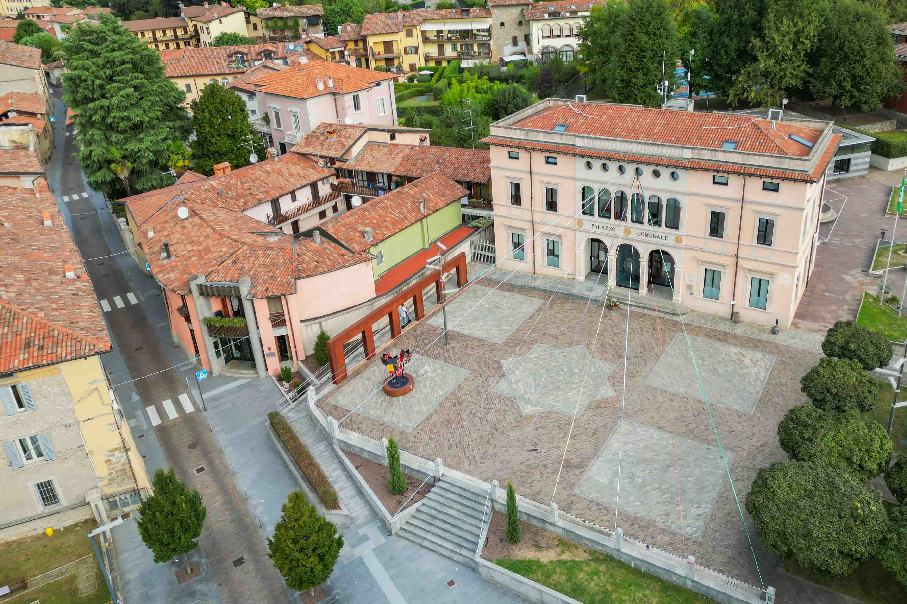

Il comune di Scanziorosciate si trova a est di Bergamo, sulle colline bergamasche.
Esso è situato a circa 7km (15 minti in auto) dal centro di Bergamo:
La sua identità nasce dall’equilibrio tra radici storiche profonde e una vocazione contemporanea orientata alla sostenibilità, alla cultura e alla partecipazione civica.
Dal punto di vista storico e culturale, Scanzorosciate conserva una struttura policentrica, composta da diverse frazioni, ognuna con una propria identità ma unite da un forte senso di appartenenza comune.
Le tradizioni religiose, le feste popolari e le iniziative culturali rafforzano il legame tra passato e presente.
La comunità si distingue per dinamismo, attenzione al sociale e spirito collaborativo. Il comune è un luogo residenziale vivo, con servizi, associazioni e spazi che favoriscono l’incontro e la partecipazione dei cittadini, mantenendo allo stesso tempo un rapporto stretto con l’ambiente e le tradizioni locali.
Dal 400 a.C.: I Celti colonizzarono l'attuale Rosciate. Il nome deriva dal suffisso celtico -ate ("villaggio") unito a Ros- ("insieme di grappoli d'uva, mazzo d'uva"), significando quindi "villaggio dell'uva".
Dal III secolo a.C.: I Romani spodestarono i Celti. L'origine del nome Scanzo è romana.
Nel V secolo d.C. l'invasione dei Visigoti costrinse gli abitanti a rifugiarsi sulla rocca del Monte Bastia. Successivamente, la penetrazione Longobarda (568) portò alla creazione di un nuovo rifugio in pianura.
Nel VII secolo Scanzorosciate divenne un'entità autonoma.
Nel medioevo il paese assunse grande importanza per la sua posizione strategica vicino a Bergamo e su una via principale, vi furono fortificazioni e castelli (soprattutto la Bastia sul Monte omonimo), testimoni del periodo; fu ad esempio costruita nel 1473 dal condottiero Bartolomeo Colleoni.
Tra il X e il XII secolo, durante l'affermazione del Comune e poi della Signoria, il borgo di Scanzo fu coinvolto nelle guerre tra Guelfi e Ghibellini.
Tra XV e XVI secolo: Sotto la Repubblica di Venezia, l'agricoltura (vite, gelso, mais) crebbe, affiancata da artigianato e libere professioni.
Nel 1659 Scanzorosciate si divise in Scanzo e Rosciate. Tra il XVII e il XVIII secolo, i due paesi conobbero prosperità, con la costruzione di ville sontuose sui colli.
L'architetto Giacomo Quarenghi acquistò e predispose la ristrutturazione di un edificio a Rosciate nel 1784.
Il dominio veneziano terminò nel 1796 con l'intervento di Napoleone.
Nel 1864 fu fondata a Scanzo la società che sarebbe diventata la moderna Italcementi, affiancando l'industria all'agricoltura
Nel 1927 Scanzo e Rosciate tornarono a essere un unico comune.
La presenza industriale più significativa oggi è il polo chimico dell'azienda Polynt (già Ftalital/Lonza), specializzata in prodotti chimici come l'anidride ftalica.